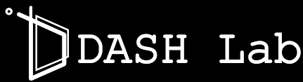
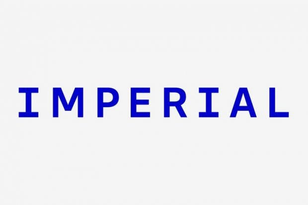

About
I am a first year Ph.D. student in Computer Science & Engineering at
,
where I am affiliated with

Before joining SKKU, I completed my bachelor's degree in Computer Engineering at the Polytechnic Faculty of the University of Kinshasa in the Democratic Republic of the Congo.
Selected Publications
Structural Preservation in Efficient Pharmacovigilance Summarization: A Causal Graph-Based Evaluation Framework
Machine Learning in Malware Analysis (Chapter 7)
Research Experience
University of Oxford
Mathematical Institute · MIORPA Programme
Research Mentee
Mentor: Francesco Hrobat
- Benchmarked the generalized friendship paradox across six centrality measures on five empirical networks and their Erdős–Rényi baselines.
- Formalized the local friendship gap Δi, analyzed its distribution and paradox prevalence, and derived normal approximations for random graphs.
- Proposed exp(−Δi) as a localized centrality measure and studied its relation to classical global centrality metrics.

Imperial College London
BASIRA Lab · GNNs for Rising Stars
Research Mentee
Supervisor: Dr. Islem Rekik
- Selected for a competitive international mentorship program and completed it with the highest distinction.
- The program covered key concepts in Graph Neural Networks (GNNs).
- Contributed to a GNN benchmarking project that led to an EMNLP 2026 main paper : GNN-CB, the first competition-based benchmark for evaluating both humans and LLMs on GNN coding tasks.
Academic Service
IEEE Access — Peer Reviewer
2026Regularly reviewing research in LLM-based recommendation systems, multi-agent LLMs, static code analysis, and LLM-driven predictive modeling.